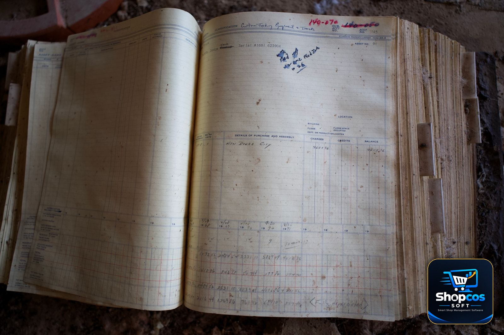

A retailer sells one packet of biscuits to one customer and takes cash. A wholesaler sells forty cartons of biscuits to a shopkeeper in another town, on credit, at a rate that depends on how many cartons he bought, and gets paid three weeks later — in two instalments, one of them by bank transfer and one in cash handed to the delivery driver. These are not the same job. Yet most "billing software" on the market is built for the first job and sold to people doing the second.
That mismatch is why so many wholesalers and distributors in Pakistan end up running their business on a register book, a calculator, and memory — even after buying software. The software could print a bill, but it could not do the things wholesale actually runs on: carton rates, credit parties, party-wise ledgers, godown stock, and payment chasing. So the register book stayed, and the software became an expensive receipt printer.
This guide explains wholesale billing the way it actually works on a Pakistani godown floor, the six features wholesale billing software must have, the seven mistakes wholesalers make when choosing it, and the eight questions to ask before you spend anything. If you supply retailers, run a distribution business, or buy in bulk and sell in cartons, this is the guide your software vendor will not write for you.
Why Wholesale Billing Breaks Retail Software
Retail billing software assumes five things. A wholesale counter violates all five, every single day:
- The customer pays now. Retail assumes cash or card at the counter. Wholesale assumes credit — a party takes goods today and pays on a cycle of 7, 15, or 30 days. The bill is not the end of the transaction; it is the start of a receivable.
- One item, one price. Retail assumes a fixed selling price per item. Wholesale assumes a rate that changes with quantity, with the party, and with the season. The same carton can have three different prices for three different parties on the same day — and all three can be correct.
- One unit. Retail sells pieces. Wholesale sells cartons, dozens, and loose pieces from the same stock, sometimes on the same bill. The software has to track all three without losing count.
- The buyer is a walk-in. Retail customers are anonymous. Wholesale customers are parties — named businesses with a ledger, a credit limit, a payment history, and a phone number you call when the cheque bounces.
- Stock sits in one shop. Retail stock sits behind the counter. Wholesale stock sits in a godown, sometimes two godowns, sometimes a godown plus a shop, and the bill has to know which one the goods actually left from.
None of this is exotic. It is the daily reality of every wholesale market in Pakistan, from Akbari Mandi in Lahore to the wholesale belts of Faisalabad and Karachi. Software that cannot model these five things is not "simpler" — it is wrong for the job, and the register book will quietly win again.
The Carton Problem: Units That Multiply
The single most common reason wholesale billing goes wrong is units. A carton of cooking oil contains 12 bottles. A carton of soap contains 48 bars. A carton of biscuits contains 24 packets — except the large pack, which contains 12. And a retailer will sometimes buy two cartons and six loose bottles, because that is exactly what his shelf needs.
If your software only understands "quantity × price," you are forced to choose: either bill everything in pieces (and do the carton maths in your head, on every bill, during a rush), or create a separate item for every carton size (so your item list explodes into hundreds of near-duplicates and your stock report becomes fiction). Both options produce the same result: wrong stock, wrong bills, and a godown count that never matches the computer.
Real wholesale billing software handles this with multi-unit items: one item, defined once, with its carton size and its loose-piece rate. You type "2 cartons + 6 pieces" and the software does the rest — it bills the cartons at the carton rate, the loose pieces at the piece rate, and deducts exactly 30 bottles from stock. Here is what that looks like on a real bill:
| Item | Qty billed | Rate | Amount |
|---|---|---|---|
| Cooking oil 1L (carton of 12) | 5 cartons | Rs 6,480 / carton | Rs 32,400 |
| Cooking oil 1L (loose) | 6 bottles | Rs 565 / bottle | Rs 3,390 |
| Washing soap (carton of 48) | 10 cartons | Rs 3,360 / carton | Rs 33,600 |
| Total | Rs 69,390 |
Notice the carton rate is not simply twelve times the piece rate: Rs 6,480 per carton works out to Rs 540 per bottle, against Rs 565 loose. That gap — the wholesale discount for buying a full carton — is the whole point of wholesale, and it is exactly what breaks when software forces you to bill everything in pieces. Before you buy any software, type a mixed carton-and-piece bill into the demo and watch the stock. If the stock falls by the wrong number, walk away.
Credit Parties: Your Real Business Is the Ledger
Ask a wholesaler what his business is worth and he will not point at his godown. He will point at his parties. A wholesaler's real asset is the network of retailers who buy from him on credit, pay on time, and come back next week. The goods are just inventory. The relationships — and the ledgers that record them — are the business.
That is why the party ledger is the heart of wholesale billing software, not a side feature. A party is not a "customer name" typed on a bill. A party is a record with a full history: every bill, every payment, every discount, every returned carton, every bounced cheque, and one number that matters more than all of them — the outstanding balance, right now.
Four ledger features separate real wholesale software from a receipt printer with a customer field:
- Party-wise khata, always visible. When a party's name is selected on a bill, their current balance should appear on the screen before a single item is added — not after the bill is printed, and not in a separate report you check later. Our guide to managing udhar khata explains why this one habit prevents most bad-credit decisions.
- Credit limits that warn at the counter. Every party has a limit, and the software should warn — loudly — when a new bill would cross it. The warning must come before the goods leave the godown, not after. A limit that only exists in your head is not a limit.
- Ageing: how old is each rupee? A balance of Rs 500,000 is not one number. It is Rs 200,000 from last week, Rs 180,000 from last month, and Rs 120,000 from two months ago — and the two-month-old part is the one that should worry you. Ageing reports turn a single balance into a collection priority list.
- Payments against specific bills. When a party pays Rs 100,000, which bills does it clear? Good software lets you settle oldest-first, or against a specific bill, and shows the party a statement they cannot argue with. A statement that lists every bill and every payment, with dates, ends most "I already paid that" arguments on the spot.
The number that matters: in a typical Pakistani wholesale business, 60–80% of the money on the street at any moment is credit — goods already delivered, payment still pending. A wholesaler who cannot see, per party, exactly how much is owed and how old it is, is not running a business. He is running a hope. The ledger is the difference.
The 6 Features Wholesale Billing Software Must Have
Judge any wholesale billing software against these six. If it fails two or more, it is retail software wearing a wholesale label.
1. Multi-unit billing (carton, dozen, piece)
Covered above — one item, several units, correct stock deduction for each. Bonus points if the software lets you set a different rate per unit and per party, and if it prints the unit breakdown on the bill so the retailer can check it against his own count.
2. Party-wise rates and discounts
Your best party — the one who buys 200 cartons a month and pays in 7 days — should not pay the same rate as a new party who buys 5 cartons and pays in 45. The software should store a rate list per party, apply it automatically, and let you run schemes: a seasonal discount, a quantity slab ("above 50 cartons, Rs 40 off per carton"), or a cash-payment discount. If every discount has to be typed by hand on every bill, it will be typed wrong — or forgotten, which costs you margin either way.
3. Godown-wise stock
Wholesale stock lives in godowns, and a bill must deduct from the godown the goods actually left. If your software has one stock number for the whole business, your physical count will never match it, and you will discover the difference during a stock audit — the worst possible time. Two godowns, two stock numbers, one report. Our stock management guide covers the counting habits that make this work, whichever software you use.
4. Returns and damage, handled properly
Wholesale returns are not retail returns. A retailer returns 3 damaged cartons from a 50-carton delivery, or short-supplies a carton that arrived with 11 bottles instead of 12. The software must record the return against the original party and bill, restore the stock by the correct unit, and reduce the party's balance — not just delete the bill. A return that is not recorded is a loss that is never explained.
5. Payment collection and reminders
Billing is half the job; collection is the other half. The software should produce a daily collection list — which parties owe what, which payments are due today, which are overdue — and let you send the statement on WhatsApp straight from the ledger. A wholesaler who waits for parties to remember to pay is a wholesaler who funds his customers' businesses for free.
6. Supplier-side billing too
You are a customer as well as a seller. The same software should track what you owe your suppliers, per supplier, with the same ledger discipline — purchase bills, supplier payments, and the margin between your buying rate and your selling rate, item by item. If the software only tracks sales, you will know your turnover and still not know your profit.
The 7 Mistakes Wholesalers Make When Choosing Software
- Choosing on the bill printout. A pretty bill is the least important feature. The ledger, the carton maths, and the ageing report are what you will live with. Judge the software on those, not on the font.
- Buying retail software because it is cheaper. It is cheaper because it does less. The register book you keep alongside it — the one that tracks the real credit and the real stock — is the hidden cost, paid every day in time and mistakes.
- Ignoring the godown. If the demo is run on a shop counter with one stock location, ask the vendor to show two godowns and a transfer between them. If he cannot, your stock will be wrong within a month.
- No credit-limit warning. A party who owes Rs 800,000 and takes another Rs 200,000 of goods is a risk you took with your eyes open — or a risk the software should have flagged. If the software stays silent, you are the credit department, and you are doing it from memory.
- Paying monthly for software that holds your ledger hostage. If you stop paying and lose access to your own party ledgers, you have not bought software — you have rented your own business records. Prefer a one-time license on your own PC, with your own daily backup. Our POS cost guide works through the three-year maths of monthly versus one-time pricing.
- Skipping the migration. Your old register book holds years of party balances. If the software cannot import those opening balances — party by party, with the correct amounts — you will run two systems for a year. Ask for the import before you pay, and test it with ten real parties.
- No trial on your real counter. A demo with the vendor's sample data proves nothing. Run the software for a full month on your real parties, your real cartons, and your real credit cycles. If it cannot survive your Monday rush, it cannot survive your business.

What a Good Wholesale Bill Looks Like
A wholesale bill is a document your customer checks, his accountant files, and you both refer back to when a payment is disputed. It needs to carry more than a retail receipt:
- Party name, address, and phone — printed, not handwritten, so there is no argument about whose bill it is.
- Previous balance, this bill, and new balance — the three numbers that turn a bill into a statement. A retailer who sees his running balance on every bill pays faster than one who has to ask.
- Every line with unit and rate — "5 cartons × Rs 6,480" and "6 bottles × Rs 565," not a single lumped quantity.
- Discount and scheme shown separately — so the party can see what he saved, and you can see what the discount actually cost.
- Payment terms on the bill — "Payable within 15 days" printed on the paper is worth more than a verbal promise.
- Delivery and vehicle note — which godown it left from, and on whose vehicle, so a short delivery can be traced.
If your current bills carry only the item names and a total, you are doing your collection team's job for them — badly. The bill is your cheapest collection tool. Use it.
The 8 Questions to Ask Before You Buy
- Can I bill cartons, dozens, and loose pieces of the same item on one bill, with correct stock deduction for each?
- Does the party's outstanding balance and credit limit appear on screen before I add items to the bill?
- Can I set a different rate per party, and run quantity-slab discounts automatically?
- Does stock track separately per godown, with transfers between godowns?
- Can I record a part-return against the original bill, and does it reduce the party's balance and restore stock?
- Can I send a party statement on WhatsApp directly from the ledger, and does it show ageing?
- If I stop paying, do I keep my data — every party, every balance, every bill — on my own computer?
- Can I import my existing party balances from my register book, and will you help me test it with real parties during the trial?
Run those eight questions on any software, including ours, and compare the answers side by side. A vendor who answers clearly is a vendor who has actually served wholesalers. A vendor who changes the subject to the bill design has told you everything you need to know.
The Bottom Line
Wholesale billing is not retail billing with bigger numbers. It is a different business: cartons that multiply, parties who pay later, ledgers that are the real asset, and godowns that have to match the computer. Software built for a retail counter will print your bills beautifully and lose your business quietly — in wrong stock, uncollected credit, and a register book that never goes away.
The right software does three things without being asked: it bills in cartons and pieces correctly, it shows you every party's balance and age before you extend more credit, and it keeps your data on your own computer where no subscription can take it away. Everything else — the pretty bill, the reports, the extras — is decoration. Get the three things right, test them on your real counter for a full month, and the register book can finally retire.
Photo credits: Two workers handling a package in a warehouse photo by Tiger Lily · High stacks of cardboard boxes in a warehouse photo by Ihsan Adityawarman · An open ledger book with handwritten entries photo by Strange Happenings — all via Pexels.